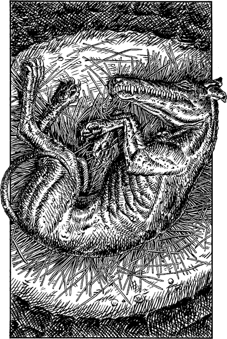

238
You draw aside the mouldy velvet curtain and at once your senses are assailed by an unwholesome aroma redolent of decaying flesh. Beyond the curtain a narrow passage descends, by means of a wooden ramp, to the edge of a dark circular pit. Cautiously you approach the rim and peer down into this reeking hollow. There, lying asleep on a mouldering bed of straw, ten feet below, is a gigantic dog-like creature. It has a shiny blue-black hide and a huge crocodile-like jaw. It is muscular, although its powerful limbs are scarred and pined with an unsightly disease.

A few thin rays of light are descending from a shaft in the rocky ceiling directly above the pit. Intrigued, you look upwards and notice a clump of sickly foliage at the very top of the shaft which is partially covering the entrance. You focus on this gap and conclude that the shaft must lead directly to the surface, at a place somewhere in the eastern foothills of the Skardos Mountains.
If you wish to attempt to scale the shaft and escape into the foothills, turn to 336.
If you decide not to attempt to climb the shaft, you can turn around and leave the pit area. Turn to 165.